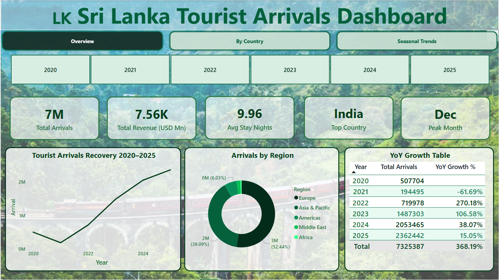
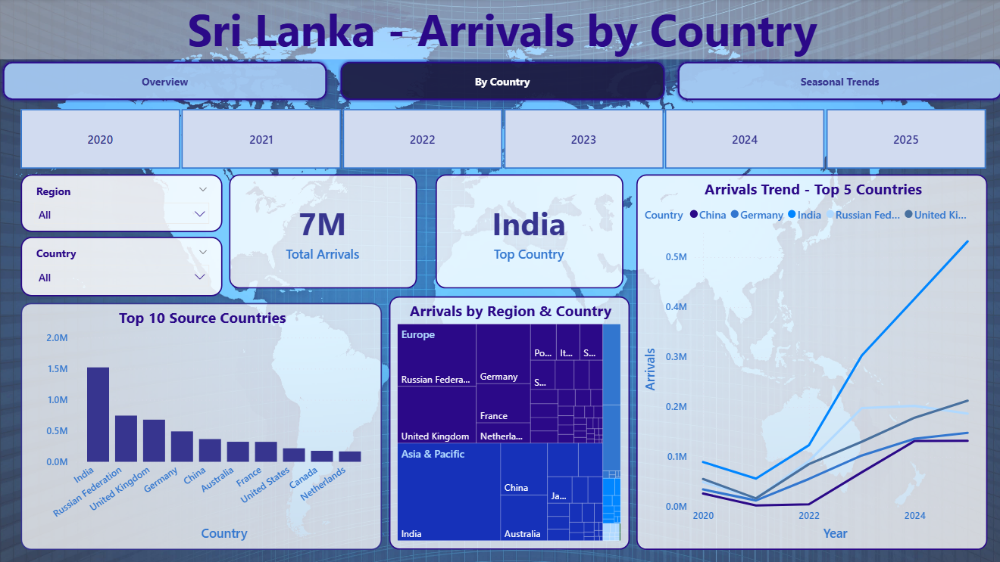
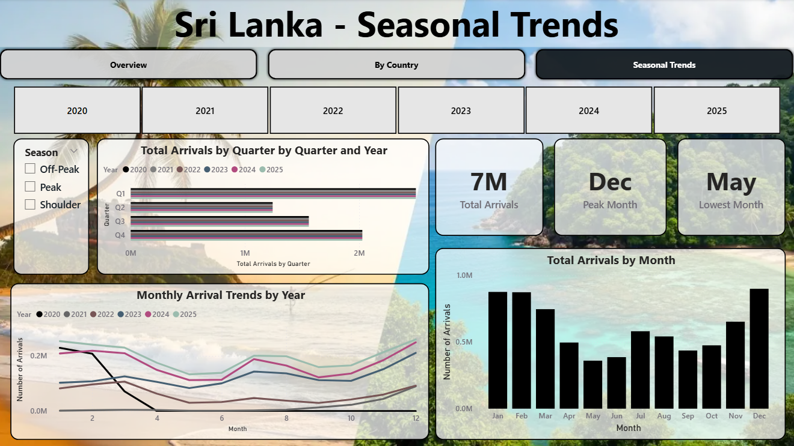

Sri Lanka Tourism Arrival Analysis
A data-driven analysis of Sri Lanka's tourism recovery (2020–2025), uncovering growth trends, key source markets, and seasonal patterns using Power BI.
// Project Overview
This project analyzes tourist arrivals to Sri Lanka using official data from the Sri Lanka Tourism Development Authority (SLTDA). The study focuses on post-COVID recovery, country-level demand, and seasonal tourism patterns between 2020 and 2025. Interactive Power BI dashboards were developed to support tourism planning and data-driven decision-making.
// Key Questions Explored
// Methodology
Collected official tourism data from SLTDA reports and monthly Excel datasets (2020–2025).
Manually extracted and validated data, consolidating 13,500+ records into a structured Excel dataset.
Designed fact and dimension tables including country, region, and time dimensions for analysis.
Built interactive Power BI dashboards with KPIs, slicers, and trend analysis visuals.
// Key Insights
// Dashboards


